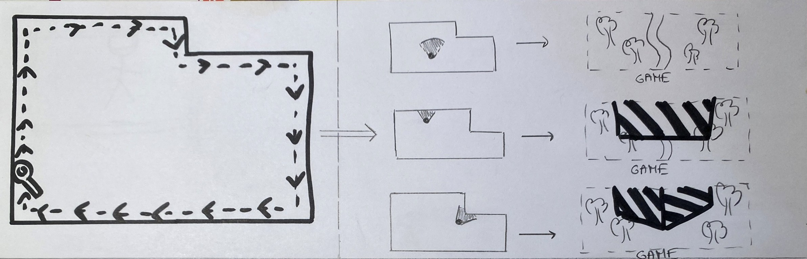
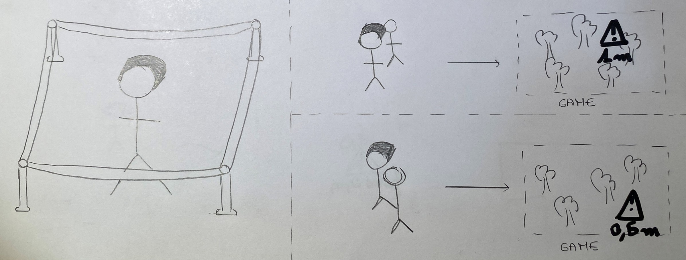
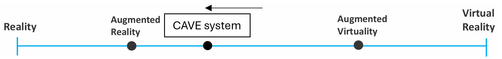

Blog for IGD301
Enzo GELAS
Homework 1
VR Fails video
First scenario
Let’s consider a VR game when you have to avoid projectiles to win.
When you have to walk in a VR environment, there’s a risk to run into walls or different objects. This type of accident, present from the very first seconds of the video, is probably the most frequent.
Solution :
- (Pragmatical solution) Before the game, ask the player to keep out the objects that could cause problems, like tables, chairs or decorations.
- (Technological solution) Create a functionality that allows players to map the walls before playing. For example, he could walk along the walls with a controller, and the program store the position of the walls in memory. In game, if the player comes too close to a wall (closer than a distance chosen by the player), the game can display the walls in a very striking color or a characteristic pattern

Second scenario
For the second scenario, let’s consider sports games. In these games, you can practice boxing, bowling, golf, football, ... You may have to perform large movements with your legs and/or arms. This can lead to accidental injury to humans or animals passing close to the player.
Solution :
- (Pragmatical solution) Limit you playing area with physical barriers to prevent people from coming in
- (Technological solution) The headset could use sensor to detect moving bodies close to the player. When this happens, the headset informs the player by triggering a buzzing sound and displaying an alert in the field of vision at the position of the object with its distance to the player.

The CAVE system
Unlike Head-Mounted displays, the CAVE system does not cover the eyes of the user. It just displays the virtual environment of the user on fixed screens, and not in a headset. The user can move in a fixed area and see all physical objects in it, including its own body. This technology can take into account the orientation of the player's head thanks to a device placed on the user.
Advantages of the CAVE system :
- Cause the user can see his own body, the walls and the objects present in the room, he can walks freely without risking to bump into surrounding obstacles. The “VR fails” video shows us that this risk is not absent from Head-Mounted displays”
- The users is in a specialized isolated room, and so experiences without external perturbations.
- As explained in the paper, as VR technologies, the CAVE system allow the user to see virtual objects at different angles, what increases the realism of the experience.
Disadvantages of the CAVE system :
- Because the eyes are not completely covered, the user is always conscient that he’s in a real physical room. It could tend to reduce the suspension of disbelief.
- As mentioned in the paper, the physical objects present in the CAVE room can prevent the user from viewing virtual items even if they’re supposed to be closer to him. This problem isn't present in Head-Mounted devices cause all is virtual in this type of technology.
Common disadvantages with VR headsets :
- Both CAVE and Head-Mounted technologies suffer from visual acuity of what is displayed. For the CAVE system, the difference of acuity between your own body, that you see directly, and the virtual items displayed can be even more uncomfortable.
About the place of the CAVE system in the Reality-Virtuality Continuum
In the Cave system, the user sees all objects present in the room he is. The rest is displayed on screen. This should lead us to think of it as augmented reality.
However, virtual items are displayed in all direction, providing more virtuality than usual augmented reality technologies, that only include a few virtual items in the real world.
For these reasons, the CAVE system should be located between Augmented Reality and Augmented Virtuality.
When more people are experiencing the CAVE system at the same time, they can interact between them. This adds more place for real interactions to the experience.
Thus, the CAVE system should be considered closer to the Augmented Reality :

Lab 1
Setting up the blog
To create my blog, I chose to do a html/css page by myself.
The style is due to be very minimalist, with a navigation bar on the left and the content on the right.
To host this blog on the Internet, I use a GitHub page.
Setting up the Unity environment
I never used Unity or similar tool (like Godot) before. But this setup were not very hard. The tutorial given by the professor was clear and straight.